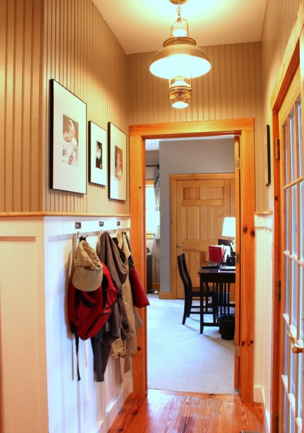
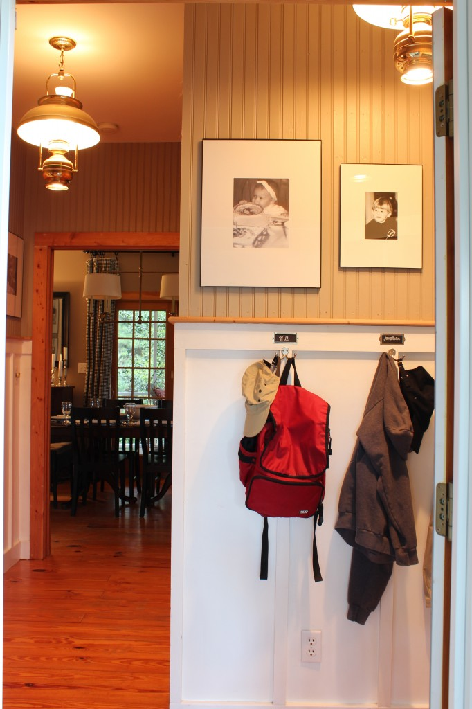
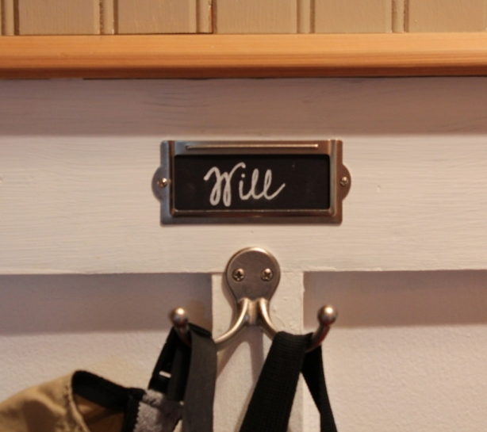

.png)
.PNG)
.PNG)
.PNG)
.PNG)
.PNG)
.JPG)
.JPG)
.PNG)
.PNG)



School is back in session, and there is a little bit of coolness in the air today. They are even calling for a low in the fifties tonight. Fall might actually be on its way! I don’t feel quite so crazy taking down the last remnants of summer things around here. Goodbye beach bags – hello bookbags. My youngest child is in college, so there really aren’t any bookbags to make room for here, but I do hang up my oldest child’s schoolbag from elementary school. (Sentimental? yes. 🙂 )

This is our little hallway as you come in our other door – the one everyone uses. There are hooks for hanging up coats and bags and whatever. When the children were young, I ordered drawer label holders and made these labels to go above the hooks for their things. The youngest couldn’t read yet. She just knew she had the last hook since she was the last child. 🙂

This area has been a practical one and has worked well. If I had it to do all over again though, I would have eaten up a couple of feet of the porch and moved the door out some giving us 2 to 3 more feet of floorspace. Then I could have put a bench in that area too (but there is a very long one on the porch.)

There is also a basket right outside the door on the porch for dirty shoes. Everyone usually does a good job of dropping off their dirt covered shoes in there. (Except for middle child at lunch – who thinks a lunch hour does not afford him time to take off and put his shoes back on!)

So where do you hang your coats? Do you have a spot with hooks in a hallway, or do you use a closet? I found some photos of a few pretty coat-hanging halls that I thought you would like – and perhaps give you an idea or two of how you might be able to put in a spot like this if you need one. The dog prints in this first one are precious!

The transom windows and the plank walls hooked me immediately in this one. desiretoinspire.net
desiretoinspire.net
Here is a space with nice built in lockers and drawers for storage. cottages-gardens.com
cottages-gardens.com
I have always loved this Heather Chadduck hallway with the bench (and the cute little boy!) I tore it out of a magazine long ago and saved it for my files for a very long time.
And I also saved this one from Martha Stewart looooooong ago – with the hopes of building that rack with the pegs.
Another Martha Stewart one…it does not have hooks for hanging coats, but it is so well organized (and can handle all the other things we bring in) that I thought it was worth showing you here. You could easily do the same thing and add hooks to hang things below that board.
One thing I do like about hanging coats and bags in the hall (besides the utilitarian purpose) is that it can add color and pattern to an otherwise plain space. Look at how much color this one adds! And that chalkboard is cute there too.
Did you find any ideas here that would work for you? I really wish I could add some kind of seating in our hall, but there really is no room for it in that tight space. So back to the title of today’s post…
Where do you hang your coat…
in the hallway or closet or some place totally different?


.PNG)
Hi I would like to know wear to hang the coats in my hall way ,
I usaully hang them up over the radiator
And they are lovely and warm when iput them on .
But they look so untidy
What do you rcommed .
———————————————————————
Barb, I think having them warmed before you put them on, outweighs the untidiness of the area. 🙂 Perhaps it is the number of coats you have there…maybe limit it to 2 or 3, and keep a basket close by for gloves, scarves, and other things. (And hung up the rest of the coats in a closet.)
This is soooooo timely! To answer your question, we don’t have a good place to hang our coats right now. These ideas will help me a lot. 🙂
———————————————————————-
Aimee – If you don’t have a good place to hang them now, I bet you are working on a plan! Glad I could pass some ideas along to you.
Kelly
Hi Kelly,
I love all of these ideas… I also love not having a hall “closet” and instead have a garden trug for garden shoes and gloves to be flung in the summer and when the snow starts to swirl where winter mitts and scarves find their way. We have an old wooden coat tree that once lived in a school principal’s office for our everyday sweaters/jackets and a fancy dancy large Victorian wardrobe with mirrored doors for bulkier coats and boots (2 nice deep drawers below the mirrored doors are perfect for storing even more hats, mitts, gloves, scarves etc.). Amidst all of this is a sweet little yellow, green and red cane seated chair for those who wish to sit while putting on their shoes or boots (although my hubby prefers to sit on the stairs that lead up to the bedrooms claiming my little chair is a wee bit too fragile for his liking!)…
Take care
Cath
—————————————————————————
Cath – All of these pieces sound wonderful! I have been wanting a garden trug (for tools-not shoes though), and I bet your Victorian wardrobe is gorgeous. Your little cane chair sounds precious! Thanks for sharing it all with us.
Kelly
I have always loved this about your house, I wish my back door had the space/arrangement for this! LOVED……….. the houndstooth scarf, go baby bear bryant~
———————————————————————–
Paulette – I had not thought of the scarf in terms of Bear Bryant, but I am sure it will make me think of your little baby bear Bryant the next time I wear it! Thank you for the compliment on the house! I sure wish I had thought to move the door wall forward some though when we were building it. Oh well, I will know better next time we build.
Kelly
These pics are all so pretty. We have a traditional hall closet that I am thinking of having ripped out and replaced with a cabinet of some sort. Thanks for the inspiration,Kelly! Hope you are having a great school year. P.S. It is so sweet that you still have an early book bag. I have some of my boys folders from elementary school with their names written on them, and I just can’t bear to throw them out!
———————————————————————
Susan – That’s interesting that you are thinking of replacing a closet with a cabinet. We have not done that one yet around here! I’m with you on not throwing out the elementary school stuff. I am usually a thow-it-out kind of person, but not when it comes to those kinds of things, and I still have their first pair of little red Keds tennis shoes too.
Good question, and the exact one we are asking around our house! With all our rearranging as of late, we are also rethinking our coat closet and system for what to do with backpacks and coats. Thanks for the great inspiration!! 😉 I love your system, what great labels too!
————————————————————————-
Melissa – Goodness with all the redoing that is going on at your house, how in the world do you tackle a coat closet too?? I guess once you have one mess going on, what’s another one, right? I am glad you liked the labels, and thank you for pinning the picture on pinterest today. I so appreciate it!
Kelly
Our entry is very compact. The kids always took their backpacks to their rooms and hung them on the closet door handle. We had an antique hall tree to hanging coats, hats and umbrellas. Then some time ago we got rid of the hall tree and replaced it with a French coat rack, which we use for hats, coats go into the coat closet most of the time, although I notice hubby hangs his rain coat on the back of a chair if it’s damp…so maybe the hall tree would have been better. I’m with you, I’d love to have room for a bench or seat, but that just isn’t the case with our tiny entry.
I really like the coat rack from bhg.
Karen
———————————————————————-
Karen – “Compact” – that’s a good word for ours too! I would have hated to have parted with an antique hall tree, and I don’t know what a French coat rack is, so I will have to look for it on your blog…sounds pretty.
Kelly
Our new house has a coat/shoe area as you come in from the garage. There are hooks and cubbies. My guys are actually using them! Makes me smile and we trip over shoes a little less.
————————————————————————–
Oh hooks and cubbies…sounds cute like a school room Stacey! Glad your guys are making good use of them. Hope you are enjoying your new home.:)
Kelly